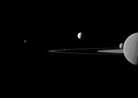

Saturn
Saturn's Moons

Huge Titan, Dione, Prometheus, and Telesto
Four moons of Saturn can be seen on this image by the Cassini spacecraft: Huge Titan and Dione at the bottom, small Prometheus (under the rings) and tiny Telesto above center.
- Huge Titan
- 5 150 km
- Dione
- 1 123 km
- Prometheus
- 10 759 km
- Talesto
- 969 km

Rhea, Mimas, Enceladus, Pandora, and Janus
Five moons in another Cassini image: Rhea bisected in the foreground, Mimas behind it, bright Enceladus above and beyond the rings, Pandora eclipsed by the F Ring, and Janus off to the left.
- Rhea
- 325 783 km
- Mimas
- 572 956 km
- Enceladus
- 10 759 km
- Pandora
- 9.69 km
- Janus
- 6 789 km